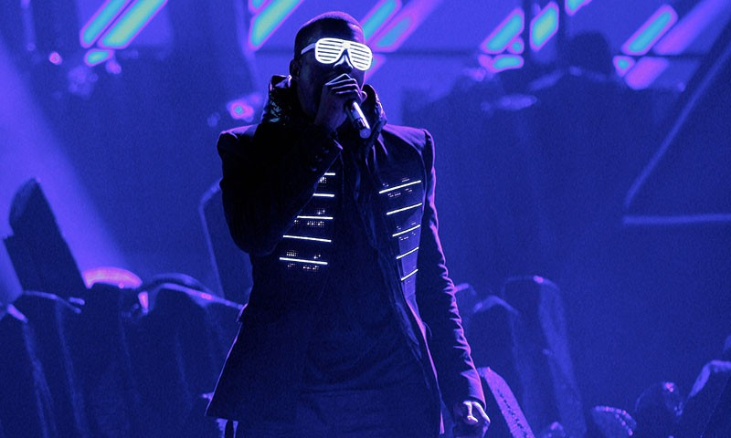
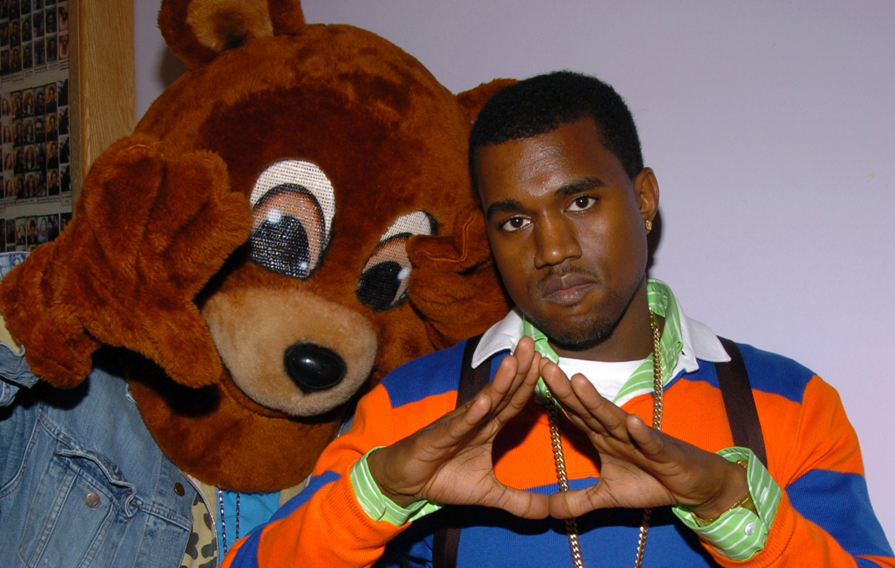
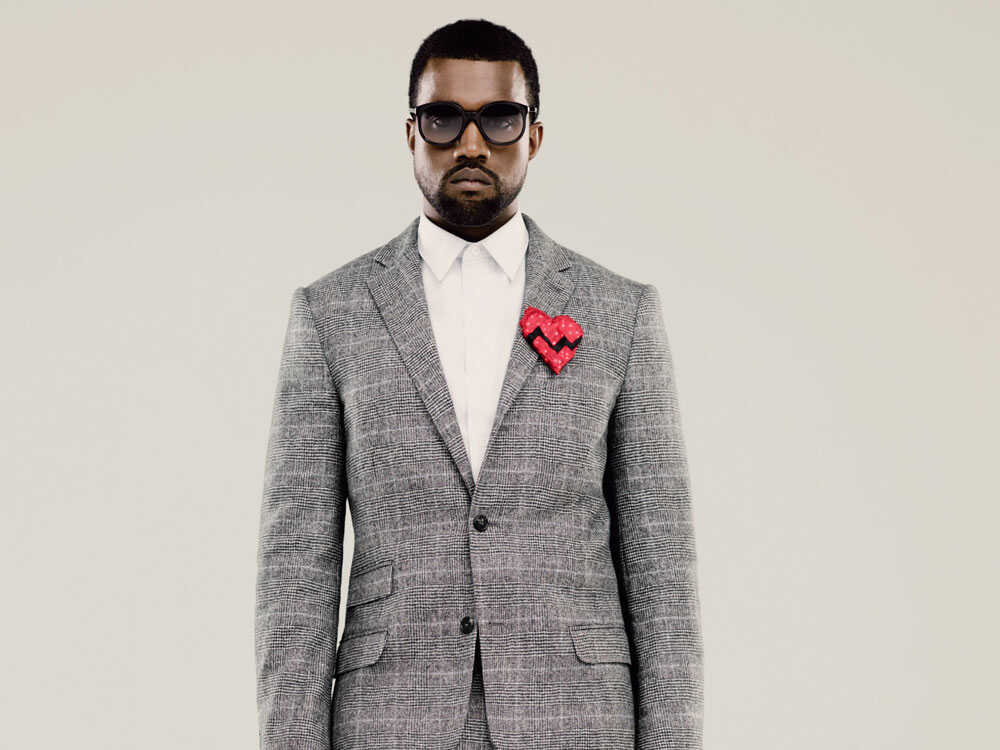
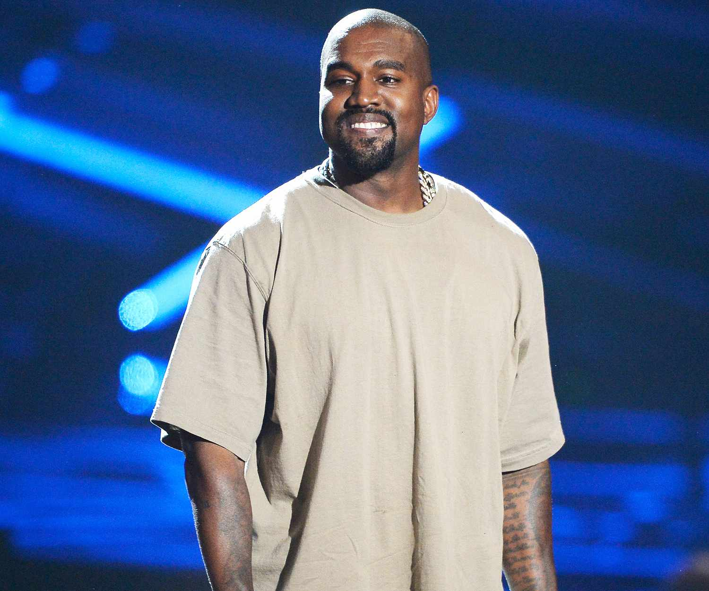
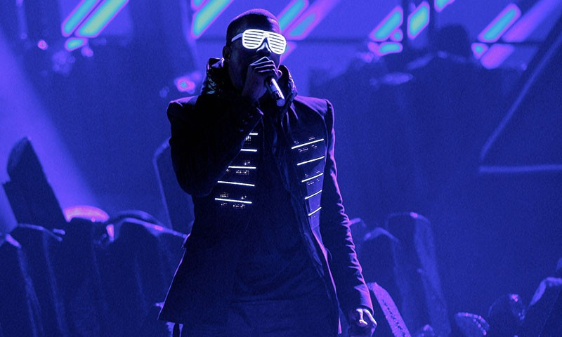
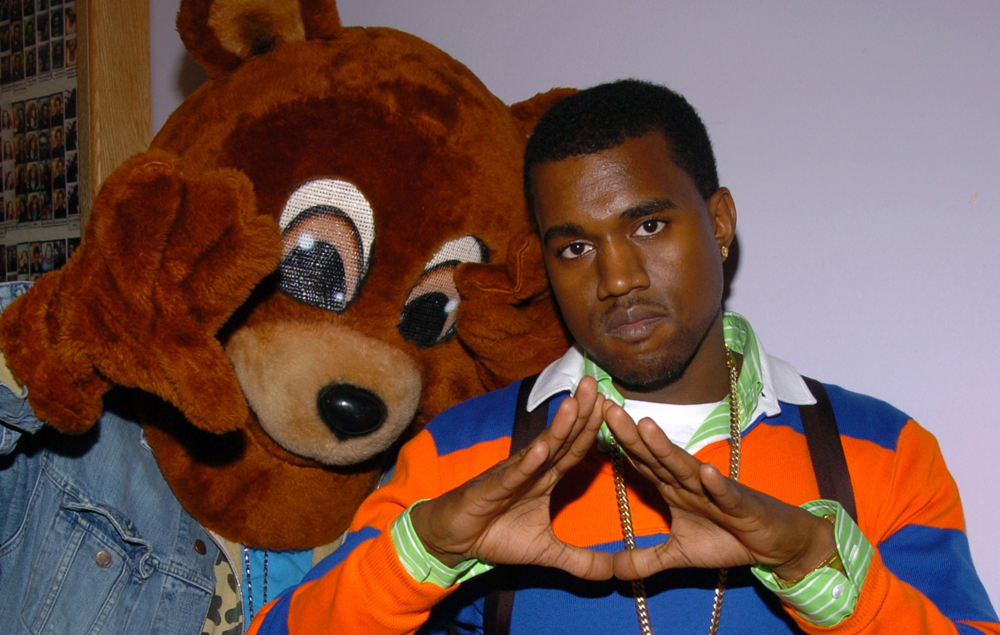
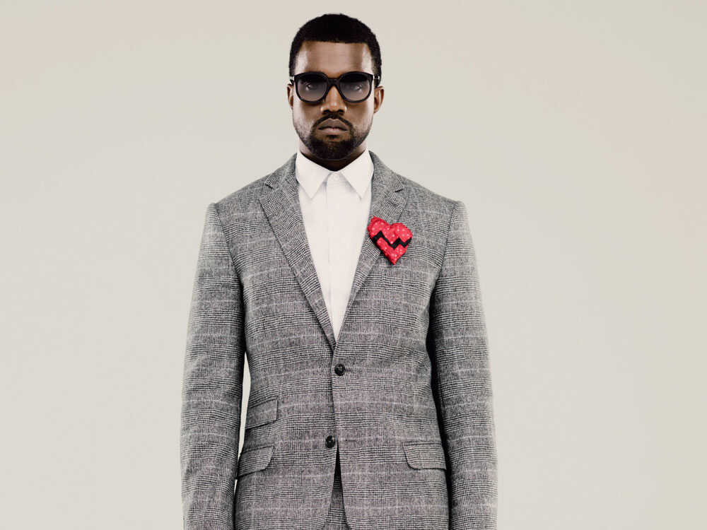
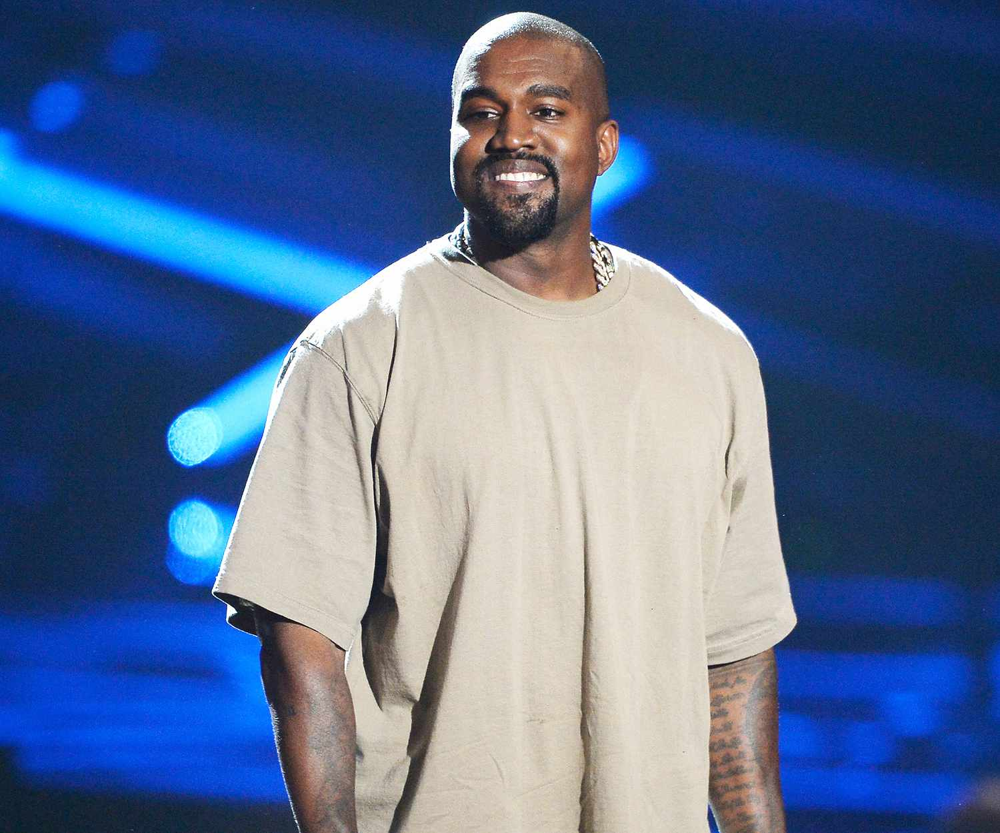

Kanye West, legal name Ye, (born June 8, 1977, Atlanta, Georgia, U.S.), American producer, rapper, and fashion designer who parlayed his production success in the late 1990s and early 2000s into a career as a popular, critically acclaimed solo artist. West, the child of a photographer and former Black Panther father and a college professor mother, grew up in Chicago and attended Chicago State University for one year before dropping out to pursue a career in music. Early on he demonstrated his considerable abilities as a producer, contributing to Jermaine Dupri’s album Life in 1472 (1998) before relocating to the New York City area, where he made his name with his production work for Roc-A-Fella Records, especially on rapper Jay-Z’s album Blueprint (2001). West’s skillful use of accelerated sample-based beats soon made him much in demand as a producer, but he struggled to be allowed to make his own recordings (partly because of the perception that his middle-class background denied him credibility as a rapper). When he finally released his debut solo album, The College Dropout (2004), it was massively successful: sales soared, and critics gushed over its sonic sophistication and clever wordplay, which blended humour, faith, insight, and political awareness on songs such as “Through the Wire” and the gospel-choir-backed “Jesus Walks.” The latter cut won a Grammy Award for best rap song in 2005.